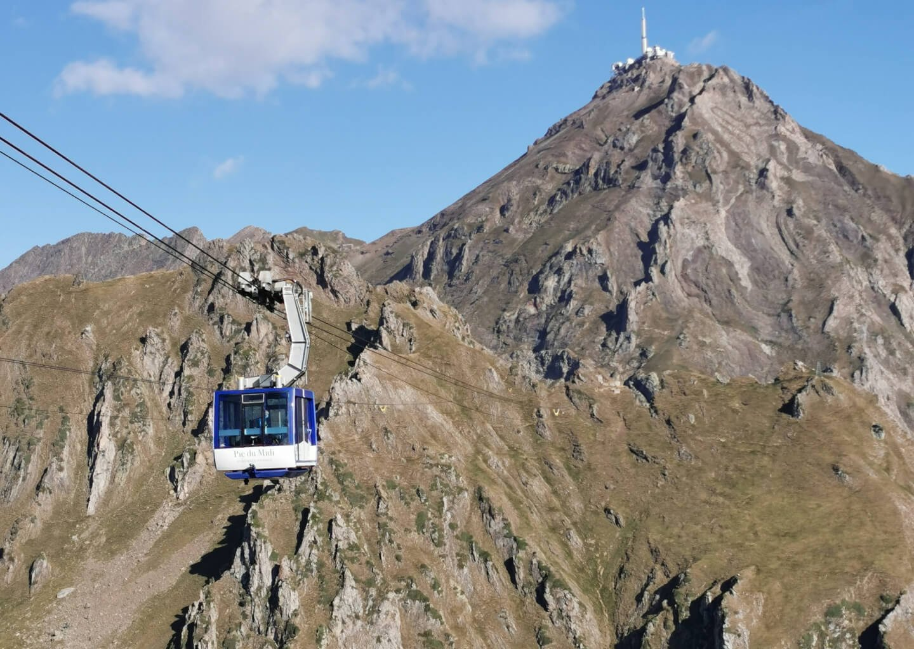

Hôtels de charme dans les Pyrénées : 8 adresses classées en 2026
Le premier de ce classement n'est pas en montagne, mais dans une ancienne cave coopérative
à trente minutes de Perpignan. Et le plus haut hôtel de France, qu'on trouve déjà dans
toutes les listes, n'ouvre qu'en septembre.
Par Emmanuel Laveran, rédacteur hôtels et gastronomie✺Publié le 24 août 2026✺16 min de lecture
La façade de l'ancienne cave coopérative de Bélesta, devenue le Domaine
Riberach, et sa terrasse au couchant. Photo : site officiel de l'établissement.
TL;DR : l'essentielSept adresses notées, une huitième qui n'a pas encore ouvert
Domaine Riberach (Bélesta, Pyrénées-Orientales), 8,9/10 :
une ancienne cave coopérative devenue écolodge 4 étoiles de 18 chambres, avec une
piscine naturelle et une table qui porte une étoile MICHELIN et une étoile
verte. Meilleure note globale, mais l'Indice Pyrénéen le plus faible du podium :
on est dans les Fenouillèdes, pas en haute montagne.
La Grange aux Marmottes (Viscos, Hautes-Pyrénées) prend la
meilleure note à l'Indice Pyrénéen, 4,7/5, alors qu'elle n'est que troisième au
classement général. Quinze chambres dans un hameau restauré, à 25 km de Lourdes.
L'Hôtellerie des Laquets, au Pic du Midi, n'est pas notée. Elle deviendra le
plus haut hôtel de France à 2 620 m, mais elle n'a pas encore ouvert :
l'ouverture est annoncée pour septembre 2026. Beaucoup de listes la classent déjà.
Nous ne notons pas un hôtel où personne n'a jamais dormi.
Comment lire ce classement. Les sept adresses ouvertes sont ordonnées
par la grille LMHS Destination sur 10 et documentées par
l'Indice Pyrénéen sur 5, indice propriétaire créé pour cette page, qui mesure le
rapport réel à la montagne et non la qualité de l'hôtel. Les deux ne vont pas ensemble, et
c'est tout l'intérêt de les publier côte à côte.
Ce que « hôtel de charme dans les Pyrénées » veut dire, et ce qu'il ne veut pas dire
Les Pyrénées souffrent d'une comparaison qu'elles ne demandent pas. On les met en face de la
Provence et de la Côte d'Azur, on constate qu'il y a moins de palaces, et on conclut que
l'offre est mince. Elle ne l'est pas. Elle est autrement distribuée, et c'est
ce que ce classement essaie de montrer.
Deux constats sont sortis des relevés, et ils vont dans le sens inverse l'un de l'autre.
Le premier : la meilleure adresse de ce palmarès n'est pas une adresse de
montagne. Le Domaine Riberach est à Bélesta, dans les Fenouillèdes, à trente minutes
de Perpignan et à une altitude de piémont. Il gagne sur la table, sur le bâti et sur le spa,
pas sur l'altitude. Le second : les adresses les plus authentiquement pyrénéennes
sont au milieu du classement, parce qu'un hameau de quinze chambres à Viscos ne
jouera jamais dans la même catégorie qu'un écolodge étoilé, quel que soit son charme.
D'où l'Indice Pyrénéen, créé pour cette page. Il mesure quatre choses
vérifiables : l'altitude et le rapport réel à la montagne,
l'authenticité du bâti, l'intégration au village ou au site,
et ce que l'établissement propose quand il pleut, ce qui, dans un massif où
la météo décide de la journée, n'est pas un détail. Il ne mesure pas la qualité de l'hôtel.
Une adresse peut être excellente et mal classée à l'Indice, comme le Manoir d'Agnès, et
l'inverse est vrai aussi.
Le classement en un coup d'œil
Hôtel
Commune
Clés
Classement
Score LMHS
Indice Pyrénéen
Bien-être
01
Domaine Riberach Bélesta, P.-O.
18
4★
8,9/10
3,8/5
Spa 60 m², piscine naturelle
02
Le Viscos Saint-Savin, H.-P.
10
4★
8,5/10
4,5/5
Aucun
03
La Grange aux Marmottes Viscos, H.-P.
15
Logis
8,4/10
4,7/5
Piscine chauffée, jacuzzi
04
Le Berceau de la Source Bagnères-de-Bigorre, H.-P.
23
4★
8,2/10
3,6/5
Bassin thermal, grotte de sel
05
ISKÖ Chalets-Hôtel Gourette, P.-A.
45
4★
8,0/10
4,4/5
Sauna, piscine chauffée l'été
06
Le Grand Tétras Font-Romeu, P.-O.
30
3★
7,8/10
3,9/5
Cryothérapie, jacuzzis
07
Le Manoir d'Agnès Tarascon-sur-Ariège
15
3★
7,6/10
3,2/5
Hammam
··
Hôtellerie des Laquets Pic du Midi, H.-P.
16
Sans objet
Non notée
Sans objet
Ouvre en septembre 2026
Capacités, classements et prestations relevés le 24 août 2026 sur les sites
officiels des établissements et auprès des offices de tourisme. H.-P. Hautes-Pyrénées,
P.-O. Pyrénées-Orientales, P.-A. Pyrénées-Atlantiques.
L'idée de départ est la meilleure de ce classement : une ancienne cave
coopérative transformée en écolodge, où les chambres sont installées
au-dessus des anciennes cuves. Dix-huit clés, pierre apparente, vue sur
les vignes en bio. Le domaine possède une piscine naturelle, un
spa de 60 m² avec hammam, sauna et cabine de massage, et
trois tables : le restaurant La Coopérative, un
bistronomique et un bistrot de pays.
La Coopérative est le vrai argument, et il est plus fort que ce qu'on lit ailleurs :
elle porte une étoile MICHELIN et une étoile verte, cette dernière
distinguant la gastronomie de circuit court. Deux distinctions, pas une.
Le bémol LMHS : ce n'est pas une adresse de montagne, et c'est pour cela
que son Indice Pyrénéen reste sous 4. On est dans les Fenouillèdes, en piémont, à trente
minutes de Perpignan. Ceux qui viennent chercher les sommets seront mieux servis plus
haut.
Bélesta, Pyrénées-Orientales · 18 chambres et suites · Ancienne cave
coopérative · Piscine naturelle · Spa 60 m² · Étoile MICHELIN et étoile verte ·
Site officiel →
Dix clés seulement, au cœur du village de Saint-Savin, ruelles pavées,
pierre, colombages et abbatiale. La maison est tenue par les époux
Saint-Martin et appartient au réseau Teritoria. Six chambres
confort et une grand confort au premier étage, une chambre montagne, une suite montagne et
une suite famille au second.
Le point que les listes oublient : la maison exploite deux tables. Le
restaurant gastronomique Le Viscos, et à quelques mètres le bistrot
L'Abbaye, nettement plus informel. C'est ce qui rend un séjour de trois
nuits tenable sans sortir du village. Position idéale pour rayonner vers Cauterets, le
Pont d'Espagne, Gavarnie, Luz et Barèges.
Le bémol LMHS : aucun espace bien-être, ni spa ni piscine. Et dix
chambres, cela veut dire une disponibilité très contrainte l'été. Réservez tôt ou passez
votre chemin.
Saint-Savin, Hautes-Pyrénées · 10 chambres et suites · 4 étoiles ·
Teritoria · Table gastronomique et bistrot L'Abbaye ·
Site officiel →
03
La Grange aux Marmottes, Viscos 8,4/10
Hautes-Pyrénées · Logis · 15 chambres · Indice Pyrénéen 4,7/5, la meilleure note de la page
C'est l'adresse la plus pyrénéenne de ce classement, et elle n'est que troisième au
score global : l'écart entre les deux colonnes se voit ici mieux que partout ailleurs.
Quinze chambres réparties dans un hameau de bâtisses anciennes restaurées,
au village de Viscos, à vingt-cinq kilomètres de Lourdes. Murs de pierre, toits d'ardoise,
cheminée et poutres à l'intérieur. Quatorze chambres supérieures dont plusieurs familiales,
et une chambre Prestige.
Côté bien-être, une piscine extérieure chauffée et un
jacuzzi qui se déverse dans le bassin. La maison porte la marque
Esprit Parc National, ce qui engage sur des critères environnementaux
vérifiés et non sur une simple déclaration.
Le bémol LMHS : la piscine ferme hors saison estivale, et le restaurant
n'ouvre pas tous les jours. Dans un village de cette taille, un soir de fermeture signifie
prendre la voiture.
La nouveauté thermale du massif : le resort a ouvert le 23 mars 2025,
et il présente une configuration rare en Occitanie, un hôtel 4 étoiles intégré à
un établissement thermal rénové, celui des Bains de la Reine. Les
chambres et suites sont spacieuses et dotées d'une kitchenette, ce qui
s'explique par la clientèle de cure, qui séjourne trois semaines.
Le parcours bien-être est le plus complet de cette page : bassin
thermal, grotte de sel, hammam, espace fitness,
salle de repos panoramique et terrasse paysagère, en plus des cabines de
soins thermaux. La maison est ouverte toute l'année, ce qui n'est pas le
cas de tout le massif.
Le bémol LMHS : l'architecture est fonctionnelle, pas patrimoniale, et
la clientèle est mixte, curistes en cure conventionnée de trois semaines et courts séjours
bien-être. On ne vient pas ici pour le charme du bâti, on vient pour l'eau.
Bagnères-de-Bigorre, Hautes-Pyrénées · Ouvert le 23 mars 2025 ·
23 chambres et suites avec kitchenette · Bassin thermal, grotte de sel, hammam ·
Ouvert toute l'année ·
Site officiel →
Quarante-cinq chalets de bois indépendants à terrasse plein sud, de une
à quatre chambres, chacun avec kitchenette équipée et salle d'eau à double vasque. Le
registre est scandinave, chaleureux, et l'échelle est celle d'un hameau plutôt que d'un
hôtel. Bar-restaurant, salle de jeux avec animations en soirée.
Contrairement à ce qu'on lit souvent, il y a bien un espace bien-être :
un sauna, une salle de sport, et une piscine extérieure chauffée
l'été avec vue sur la montagne. Situation à quatre kilomètres du
col d'Aubisque, au pied de la station de Gourette et de la vallée d'Ossau,
ski l'hiver et randonnée l'été.
Le bémol LMHS : c'est un format chalet, pas un hôtel traditionnel, et la
tarification à la semaine est souvent plus avantageuse que la nuitée. Ceux qui cherchent
un service d'hôtel classique, réception permanente et room service, seront désorientés.
Gourette, Pyrénées-Atlantiques · 45 chalets de 1 à 4 chambres ·
4 étoiles · Sauna, salle de sport, piscine chauffée l'été · Col d'Aubisque à 4 km ·
Site officiel →
À 1 800 mètres, en centre-station, trente chambres et suites
familiales dans un hôtel 3 étoiles ouvert à l'année. Et une surprise que les listes
qualifient à tort de « spa basique » : la maison propose une piscine intérieure
chauffée, un sauna, une salle de sport, des jacuzzis
extérieurs avec vue panoramique, et surtout un bassin de
cryothérapie.
Un bain froid dans un 3 étoiles de montagne mérite d'être signalé : c'est un équipement
que nous avons vu se répandre à Paris, où il fait l'objet de notre
classement des spas à bain froid, et qui
reste rare en station. Pour un skieur ou un traileur, la combinaison jacuzzi panoramique
et bassin froid vaut mieux qu'un hammam de plus.
Le bémol LMHS : l'architecture est celle d'un hôtel de station des
années de construction, sans caractère particulier, et la clientèle est mixte. C'est un
très bon outil, ce n'est pas une maison de charme.
Font-Romeu, Pyrénées-Orientales · 1 800 m · 30 chambres et suites
familiales · Piscine intérieure chauffée, sauna, jacuzzis panoramiques, bassin de
cryothérapie · Ouvert à l'année ·
Site officiel →
Un manoir du XIXe siècle au 2 rue Saint-Roch, à
Tarascon-sur-Ariège, dont la façade et l'escalier ont été conservés et l'intérieur
entièrement modernisé : quinze chambres lumineuses et contemporaines, climatisées. Un
hammam, un parc, une terrasse privée, un parking gratuit, et le restaurant
gastronomique Les Saveurs du Manoir, fermé le dimanche soir et le lundi.
La position est son meilleur argument pratique : sur l'axe Toulouse-Andorre, c'est une
étape naturelle, et l'Ariège reste le département le moins fréquenté du massif.
Le bémol LMHS : c'est une adresse de ville de vallée, pas de montagne,
d'où l'Indice Pyrénéen le plus bas de la page. Pas de piscine, un hammam mais pas de
parcours bien-être, et un restaurant fermé deux services par semaine.
2 rue Saint-Roch, 09400 Tarascon-sur-Ariège · 15 chambres · Manoir du
XIXe · Hammam · Restaurant Les Saveurs du Manoir · Parking gratuit ·
Site officiel →
L'Hôtellerie des Laquets, la huitième adresse, celle que nous ne notons pas

Le téléphérique du Pic du Midi, et le sommet où se trouve l'observatoire.
L'Hôtellerie des Laquets est adossée à la face sud, à 2 620 mètres. Photo : Pic du Midi.
C'est l'adresse dont tout le monde parle, et elle mérite qu'on en parle : à
2 620 mètres, adossée à la face sud du Pic du Midi de
Bigorre, l'ancienne hôtellerie des Laquets deviendra le plus haut hôtel de
France. Le bâtiment a été construit entre 1930 et 1933, il est fermé
depuis une trentaine d'années, et sa réhabilitation prévoit seize chambres,
chacune avec salle de bain, ce qui n'avait jamais existé à cette altitude. On y accédera par un
téléphérique privatif reliant le sommet aux Laquets.
Le tarif annoncé, de l'ordre de 569 € pour deux personnes, ne se compare
pas à une nuit d'hôtel : il comprend l'ascension en téléphérique, la visite des installations
du sommet, la descente vers l'hôtellerie, un dîner, la nuit et le petit-déjeuner. C'est un
forfait d'expérience, pas un prix de chambre.
Et c'est précisément pourquoi elle n'est pas notée. À la date de
publication de cette page, l'établissement n'a pas encore ouvert :
l'ouverture est annoncée pour septembre 2026. Plusieurs classements la placent
déjà dans leur podium, avec un score et un avis. Nous ne notons pas un hôtel dans lequel
personne n'a encore dormi, et nous ne décrivons pas une expérience qui n'a pas eu lieu. Elle
figure sur cette page parce qu'elle changera le massif, pas parce que nous saurions déjà ce
qu'elle vaut. Nous la noterons après ouverture, et après une nuit sur place.
Deux chiffres qui circulent, et ce qu'ils disent vraiment
La dynamique touristique du massif est réelle, mais elle est régulièrement mal citée, et
nous avons dû reprendre deux chiffres à la source avant de les publier.
Le premier concerne le parc hôtelier des Hautes-Pyrénées. On lit
fréquemment 234 établissements. Les données disponibles pour 2026 tournent
plutôt autour de 224 établissements, avec une montée en gamme continue vers la
catégorie 4 étoiles. La différence est marginale, la tendance ne l'est pas.
Le second est plus intéressant, parce qu'il est faux dans un sens précis. Le taux de
49,7 % que l'on voit attribué à la « clientèle étrangère » des
Hautes-Pyrénées est en réalité le taux d'occupation hôtelière de 2024, soit
49,78 %. Il est passé à 51,23 % en 2025, ce qui confirme une progression
engagée depuis 2022. Ce n'est pas une part de clientèle, c'est un taux de remplissage, et les
deux ne se racontent pas de la même façon.
Quelle adresse pour quel séjour
Une table, et rien d'autre à décider. Le Domaine Riberach pour l'étoile et
l'étoile verte, Le Viscos pour la table gastronomique doublée d'un bistrot au coin de la rue.
Ce sont les deux seules adresses de cette page où le dîner est un motif de venue.
La montagne, vraiment. La Grange aux Marmottes, 4,7/5 à l'Indice Pyrénéen,
ou ISKÖ à Gourette, 4,4/5. Hameau restauré d'un côté, chalets de bois de l'autre, et dans les
deux cas les sentiers au bout du chemin.
L'eau. Le Berceau de la Source pour le thermalisme véritable, bassin
thermal et grotte de sel, ouvert toute l'année. Le Grand Tétras pour la combinaison jacuzzis
panoramiques et bassin de cryothérapie, plus sportive que curative.
En famille. ISKÖ pour l'espace, des chalets jusqu'à quatre chambres et une
piscine l'été. La Grange aux Marmottes pour les chambres familiales et la nature immédiate. Le
Grand Tétras pour la piscine intérieure, la seule qui ne dépende pas de la saison.
Hors saison. Trois adresses seulement sont sûres toute l'année, Le Berceau
de la Source, Le Grand Tétras et Le Manoir d'Agnès. Ailleurs, la piscine ferme, le restaurant
lève le pied, et il faut appeler avant de partir. Si vous cherchez ce type d'arbitrage dans un
autre massif ou une autre région, notre
sélection provençale et notre
sélection normande suivent la même logique.
Le mot d'EmmanuelLe massif qu'on compare toujours à autre chose
On juge les Pyrénées avec les critères des Alpes ou de la Provence, et elles perdent à tous les coups. Moins de palaces, moins de stations-vitrines, moins de bastides à oliviers. Ce classement m'a convaincu qu'on regarde la mauvaise colonne. Ce que le massif fait bien, c'est la petite échelle : dix chambres à Saint-Savin, quinze dans un hameau à Viscos, dix-huit au-dessus d'anciennes cuves à vin. Ce sont des maisons qu'une famille tient, pas des actifs qu'un fonds arbitre, et cela s'entend dès la réservation. Le revers est réel et je l'ai écrit adresse par adresse : les piscines ferment, les restaurants aussi, et un dimanche soir de novembre dans une vallée peut se solder par un dîner en ville. Une réserve d'usage, que je préfère dire : nous n'avons dormi dans aucune de ces maisons pour cette édition. Ce qui est publié ici, ce sont des capacités, des classements, des équipements et des distinctions, tous relevés à la source. Le service, lui, ne se juge pas depuis un bureau. Et quant à l'hôtel du Pic du Midi, que tout le monde classe déjà, j'attendrai d'y avoir dormi comme les autres.
Emmanuel Laveran, rédacteur hôtels et gastronomie
FAQ : hôtels de charme dans les Pyrénées
Quel est le meilleur hôtel de charme des Pyrénées en 2026 ?
Sur notre grille, le Domaine Riberach à Bélesta, dans les Pyrénées-Orientales, avec 8,9/10. Un écolodge 4 étoiles de 18 chambres installé dans une ancienne cave coopérative, avec une piscine naturelle, un spa de 60 m² et le restaurant La Coopérative, qui porte une étoile MICHELIN et une étoile verte. Nuance importante : ce n'est pas une adresse de haute montagne. Son Indice Pyrénéen n'est que de 3,8/5, contre 4,7/5 pour La Grange aux Marmottes à Viscos, qui est la plus authentiquement pyrénéenne de la sélection.
Peut-on déjà réserver l'hôtel du Pic du Midi ?
L'Hôtellerie des Laquets, qui deviendra le plus haut hôtel de France à 2 620 mètres, n'a pas encore ouvert : l'ouverture est annoncée pour septembre 2026. Seize chambres dans un bâtiment construit entre 1930 et 1933, fermé depuis une trentaine d'années, accessible par un téléphérique privatif. Le tarif annoncé, de l'ordre de 569 € pour deux, est un forfait comprenant l'ascension, la visite du sommet, le dîner, la nuit et le petit-déjeuner. Nous ne la notons pas : on ne note pas un hôtel où personne n'a encore dormi.
Quels hôtels de charme des Pyrénées ont un spa ?
Cinq des sept adresses notées proposent un équipement bien-être, mais de nature très différente. Le Berceau de la Source à Bagnères-de-Bigorre est le plus complet, avec bassin thermal, grotte de sel, hammam et salle de repos panoramique. Le Domaine Riberach a un spa de 60 m² et une piscine naturelle. Le Grand Tétras à Font-Romeu combine piscine intérieure chauffée, sauna, jacuzzis panoramiques et un bassin de cryothérapie, rare en station. ISKÖ a un sauna et une piscine chauffée l'été, La Grange aux Marmottes une piscine chauffée et un jacuzzi, et Le Manoir d'Agnès un hammam. Le Viscos n'a aucun espace bien-être.
Quel département des Pyrénées choisir ?
Les Hautes-Pyrénées concentrent trois des sept adresses notées et la plus grande diversité : gastronomie au Viscos, hameau de montagne à La Grange aux Marmottes, thermalisme au Berceau de la Source. Les Pyrénées-Orientales offrent le contraste le plus fort, entre l'écolodge étoilé de Bélesta et l'hôtel de station de Font-Romeu, avec un climat plus doux. Les Pyrénées-Atlantiques, avec ISKÖ à Gourette, sont le meilleur choix pour la randonnée et le ski. L'Ariège reste le département le moins fréquenté, avec Le Manoir d'Agnès sur l'axe Toulouse-Andorre.
Quelles adresses sont ouvertes toute l'année ?
Trois avec certitude : Le Berceau de la Source, Le Grand Tétras et Le Manoir d'Agnès. Ailleurs, la saisonnalité se joue moins sur la fermeture de l'hôtel que sur celle des équipements : la piscine de La Grange aux Marmottes et celle d'ISKÖ ne fonctionnent qu'en saison estivale, et plusieurs restaurants ferment un ou deux services par semaine hors saison. Dans une vallée, un soir de fermeture signifie reprendre la voiture. Appelez avant de partir.
Que mesure l'Indice Pyrénéen de ce classement ?
C'est un indice propriétaire créé pour cette page. Il agrège quatre éléments vérifiables : l'altitude et le rapport réel à la montagne, l'authenticité du bâti, l'intégration au village ou au site, et ce que l'établissement propose quand il pleut. Il ne mesure pas la qualité de l'hôtel, qui relève de la grille LMHS Destination sur 10. Les deux échelles divergent volontairement : le premier du classement général n'a que 3,8/5 à l'Indice, et la meilleure note de l'Indice, 4,7/5, revient à une adresse classée troisième.
Méthode et sources
Classement documentaire, sans séjour de contrôle pour cette édition, et nous ne prétendons pas le contraire. Les sept adresses ouvertes sont ordonnées par la grille LMHS Destination sur 10, celle de nos palmarès régionaux, et documentées par l'Indice Pyrénéen sur 5, indice propriétaire créé pour cette page, qui mesure le rapport réel à la montagne et non la qualité de l'établissement. Aucune de ces adresses n'était déjà notée sur ce site, ce classement est donc leur première évaluation. La huitième adresse n'est pas notée : l'Hôtellerie des Laquets n'avait pas encore ouvert à la date de publication, et une note supposerait au minimum une ouverture. Capacités, classements en étoiles, équipements de bien-être, distinctions, dates d'ouverture et affiliations relevés le 24 août 2026 sur les sites officiels des établissements, sur les fiches des offices de tourisme départementaux et sur le Guide MICHELIN pour les distinctions. Aucun tarif n'est publié dans le tableau comparatif : les fourchettes relevées varient du simple au double selon la saison, la catégorie et le canal, et plusieurs de celles qui circulent en ligne sont inférieures aux tarifs affichés par les maisons elles-mêmes. Aucune note de plateforme d'avis n'est reprise : nous ne collectons pas d'avis clients. Aucun partenariat commercial, aucune affiliation, aucun séjour offert. Photographies : sites officiels des établissements et Pic du Midi.
7 adresses notéesIndice Pyrénéen /51 non notée, pas encore ouverte0 partenariat